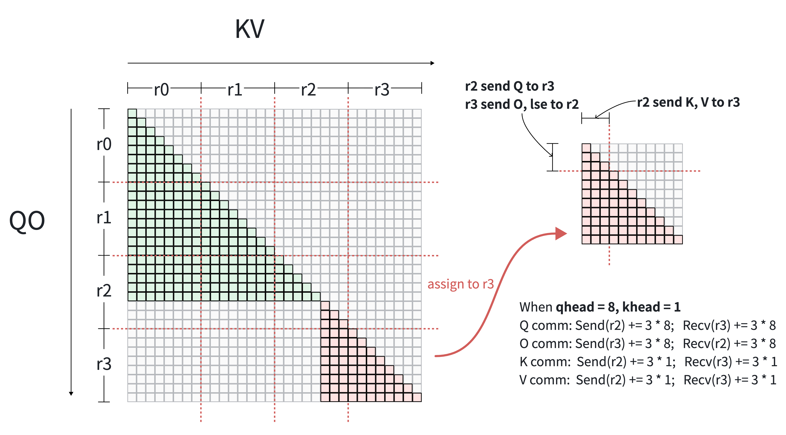

Dynamic Attention Solver#
引言#
上下文并行（CP）将序列 activation 分片到分布式设备上，以突破长上下文训练的显存限制。在 MagiAttention 中，static attn solver 已基本解决了标准长上下文负载下的 CP 调度问题——这些场景中 mask 在 iteration 前是静态或可确定的（如 causal、causal document、sliding window）。通过在 iteration 开始前进行初始 token dispatch，静态 solver 确保各 rank 间的计算均衡，同时将数据搬运限制为 仅 \(\mathrm{KV}\) 通信，保持 Query/Output（\(\mathrm{QO}\)）token 固定在其 home device 上。
静态 Solver 的局限性#
为实现分布式 rank 间的计算负载均衡，静态 solver 依赖 迭代前 token dispatch：将序列切分为多个 chunk，估计每个 chunk 的 FLOP 计算量，并在执行前启发式地将这些 chunk dispatch 到各 CP rank。
关键在于，该方法要求全局 attention mask 在 iteration 开始前是静态且完全确定的，使得每个 chunk 的 attention FLOP 计算量可以提前评估，从而驱动启发式 dispatch 算法。
然而，静态 solver 面临两个根本性限制，使其无法支持动态稀疏 attention 机制：
运行时动态稀疏 Attention：DeepSeek Sparse Attention (DSA) [DeepSeek-AI et al., 2025] 和 Native Sparse Attention (NSA) [Yuan et al., 2025] 等架构在每层前向中通过轻量级 indexer 在运行时计算稀疏 \(\mathrm{KV}\) 选择。由于产生的 attention mask 直接依赖动态 activation 状态和学习参数，mask 结构在 iteration 执行前无法获知，使得迭代前 token dispatch 完全不可行。
仅支持 CPU 端 Mask 表示：静态 solver 仅接受 CPU 端 mask 描述符（如 mask 类型枚举、文档边界索引）。它无法直接使用以 GPU 端 tensor 表示的 attention mask。许多现代 attention 变体天然以 device 端 tensor 的形式生成或操作 mask，与静态 solver 的 CPU-only mask 接口不兼容。
这些限制使得静态 solver 无法支持现代动态和 device 原生的 attention 机制。
核心问题与设计思路#
动态上下文并行中的核心系统挑战是：在严格的 activation 显存均衡约束下（每个 rank 持有均匀的序列分片），当 token dispatch/重排不可用且 attention mask 在运行时动态生成时，如何进行在线负载划分和计算-通信协同调度？
为此，MagiAttention 引入了 Dynamic Attention Solver。核心思想基于两个关键设计选择：
固定 Token 分片 + 启用 \(\mathrm{QO}\) 通信：无迭代前 token dispatch 时，每个 rank 持有固定的序列分片。此设置下仅通信 KV 会严格固定每个 rank 的计算量，没有负载再均衡的空间。因此 solver 同时启用 \(\mathrm{QO}\) 和 \(\mathrm{KV}\) 的通信（启用 \(\mathrm{QO}\) 通信）。同时通信 \(\mathrm{QO}\) 和 \(\mathrm{KV}\) 使得任何计算任务都可以调度到任意 rank。
逐层在线求解：在每个 attention 层的前向过程中，动态 solver 感知当前层的 mask 结构，计算每个 attention tile 的 FLOP 计算量，并动态地将计算任务分配给各 CP rank。它在各设备间均衡计算 FLOPs 的同时最小化所有 rank 的最大通信量（即瓶颈最小化），实时 生成执行元数据（
CalcMeta和CommMeta）。
┌─────────────────────────────────────────────────────────┐
│ Context Parallelism Design │
└────────────────────────────┬────────────────────────────┘
│
┌────────────────────────┴────────────────────────┐
▼ ▼
MagiAttention Static Solver MagiAttention Dynamic Solver
┌───────────────────────────────────┐ ┌────────────────────────────────────┐
│ • Mask: Static / Pre-iter known │ │ • Mask: Dynamic / Per-layer runtime│
│ • Token Sharding: Heuristic │ │ • Token Sharding: Fixed sequential │
│ reordering (Pre-iteration) │ │ sharding │
│ • Comm Space: KV-only comm │ │ • Comm Space: QO & KV dual comm │
│ • Schedule: Local QO, pull KV │ │ • Schedule: Dynamic tile-to-rank │
└───────────────────────────────────┘ └────────────────────────────────────┘
以下章节中，我们描述 dynamic attn solver 的详细建模和调度算法（概览），介绍其用户接口（用户接口），并概述当前局限性和未来路线图（当前局限性与未来路线图）。
系统抽象与开销建模#
Dynamic Attention Solver 将上下文并行（CP）调度建模为 感知 mask 的在线 task-to-rank 映射问题（无 token 重排）。通过保持序列 token 在其原始连续物理布局 \((0..P-1)\) 中不动，严格保证 activation 显存均衡。对于每个不同的动态 mask，solver 检查其结构以感知 \(\mathrm{Q} \times \mathrm{KV} \times \text{Head}\) 维度上的真实 FLOP 计算量。核心目标是 严格均衡各 rank 的非零计算 FLOPs，同时最小化瓶颈 \(\mathrm{QO}\)/\(\mathrm{KV}\) 通信量。
固定顺序分片#
无迭代前 token dispatch 时，动态 solver 采用 固定顺序分片 作为默认数据布局。长度为 \(S\) 的序列被均匀切分为 \(P\) 个连续 chunk \((0..P-1)\)，rank \(p\) 存储第 \(p\) 个 chunk。这确保每个 rank 恰好持有 \(S/P\) 个 token，天然保证所有 CP rank 的 activation 显存完美均衡。
在无 attention mask 先验知识的情况下，顺序分片是一种有效的 mask-agnostic 布局，可保持 token locality。将相邻 token 存储在同一 rank 上，契合相邻 token 频繁相互 attend 的常见 attention 模式。保持该 locality 增加了本地计算占比并减少跨 rank 数据搬运，使顺序分片对动态 solver 友好。
此外，该分片在全局 attention 空间上产生自然的网格结构。\(P\) 个 query chunk 和 \(P\) 个 key-value chunk 将完整的 \(\mathrm{Q} \times \mathrm{KV}\) attention 矩阵划分为 \(P \times P\) 网格。块 \((i, j)\) 表示 query chunk \(i\) 与 key-value chunk \(j\) 之间的 attention。主对角线块 \((i, i)\) 对 rank \(i\) 是 本地的，非对角线块则需要通信才能计算。

图 71 固定顺序分片示意图：在包含长度为 21 和 11 的两条序列的变长（varlen）causal mask 上使用 \(P = 4\) 个 rank。纵轴为 Query/Output（\(\mathrm{QO}\)），横轴为 Key/Value（\(\mathrm{KV}\)），均按 token ID 排序。着色条目表示需要计算的有效（非 mask）位置。蓝色 tile 表示存储在 rank r1 的 \(\mathrm{KV}\)，黄色 tile 表示存储在 rank r2 的 \(\mathrm{QO}\)，绿色 tile 表示跨 rank attention 块——\(\mathrm{QO}\) 在 r2 而 \(\mathrm{KV}\) 在 r1。由于 \(\mathrm{QO}\) 和 \(\mathrm{KV}\) 属于不同 rank，绿色块无法本地计算，必须通过 rank 间通信。#
计算开销估计#
Attention 的计算量直接通过 有效 mask 面积之和 估计。由于 attention FLOPs 与有效（非 mask）条目数量线性相关，全局 attention 空间（\(\mathrm{Q} \times \mathrm{KV} \times \text{Head}\)）被划分为基本计算块 \(B_{i,j,h}\)，每个块表示 query chunk \(i\)、key-value chunk \(j\) 和 attention head \(h\) 之间的子矩阵计算。
每个块 \(B_{i,j,h}\) 的计算量通过其 有效 mask 面积 \(A(B_{i,j,h})\) 量化——定义为该子矩阵内有效（非 mask）条目的总数。实际中（如打包变长序列、多文档边界或动态稀疏 mask），单个块可能没有均匀结构，而是包含多个子区域的组合、任意形状或分散的有效条目。无论内部布局如何，\(A(B_{i,j,h})\) 均通过直接统计对应 mask 子矩阵中的有效非零条目确定。
例如，块内典型模式包括：
Full Mask：所有条目均有效，\(A = S_q \times S_k\)（其中 \(S_q\) 和 \(S_k\) 分别为 query 和 key-value chunk 大小）。
Causal Mask：条目受因果约束限制，对角块面积为 \(A = \frac{S_q \times (S_q + 1)}{2}\)（假设 \(S_q = S_k\)）。
混合或不规则组合：块跨越多个序列边界或动态稀疏选择，形成多种形状或稀疏模式的组合。

图 72 基于有效 mask 面积的计算量估计示意图，展示不同块组合情况。#
通信开销估计#
当某个 rank 被分配计算一个所需数据未完全驻留在本地的 attention 块时，会触发 rank 间通信 以传输缺失的数据 chunk。数据 chunk 的通信开销通过其 通信量 估计，定义为 chunk 中的 token 数乘以 attention head 数：
以 前向 为例：计算一个 attention 块需要 \(\mathrm{Q}\)、\(\mathrm{K}\)、\(\mathrm{V}\) 作为输入，产生 \(\mathrm{O}\) 和 \(\text{lse}\)（log-sum-exp）作为输出。由于 \(\text{lse}\) 相对于 activation tensor 大小可忽略，在开销估计中省略。因此一次 \(\mathrm{QO}\) chunk 通信将 \(\mathrm{Q}\) 发送到计算 rank 并将 \(\mathrm{O}\) 回传，而一次 \(\mathrm{KV}\) chunk 通信将 \(\mathrm{K}\) 和 \(\mathrm{V}\) 一起传输。
每次通信涉及一个 sender 和一个 receiver：当数据 chunk 从 rank \(s\) 传输到 rank \(d\) 时，同时增加 rank \(s\) 的 send volume 和 rank \(d\) 的 recv volume。Solver 分别跟踪每个 rank 的 send/recv volume，因为两个方向都贡献于整体通信瓶颈。其次要目标是 最小化所有 rank 中的最大通信量（瓶颈最小化），防止任何单个 rank 成为通信 straggler。
{kind=link}

图 73 通信开销估计示意图。在 \(P = 4\) 顺序分片下，红色 attention tile（右下角）被调度到 rank 3 (r3)。虽然 r3 对该任务有较高的数据 locality，但部分依赖触发了从 r2 的远程 fetch。该跨 rank 传输开销为 \(S_{\text{chunk}} \times H\)，增加 r2 和 r3 的通信量。当多个本地 tile 共享同一 chunk 时，远程 fetch 开销通过数据复用得以摊销。#
优化模型#
在线 solver 搜索最优的 block-to-rank 映射 \(\mathcal{M}: \{B_{i,j,h}\} \to \{0, \dots, P-1\}\)，在严格的显存和依赖约束下优化通信与计算的 overlap：
计算负载均衡约束：计算均衡不作为严格最小化问题，而是使用 imbalance ratio \(\mu\) 建模为不等式约束。对每个 rank \(r\)，其分配的计算量必须严格小于 \(\mu\) 乘以全局总计算量：
瓶颈通信最小化：最小化所有 rank 中最大的单向通信量（send 或 recv），防止网络 straggler：
本地优先与 Overlap 最大化：优先将本地任务分配给其 home rank。使系统可以立即开始本地计算，有效地与远程任务所需的通信 overlap。
动态 Solver 算法#
基于上述优化模型，动态 solver 采用 二分搜索驱动的贪心启发式算法 实时寻找近优的 block-to-rank 映射。算法设计为可在多核 CPU 上并行执行，毫秒级耗时。
算法流水线#
Solver 在对通信阈值 \(K\) 的二分搜索循环内执行三个阶段：
┌─────────────────────────────────────────────────────────────────────────┐
│ Binary Search over Threshold K │
│ │
│ for each candidate K in [0, K_max]: │
│ ┌─────────────────────────────────────────────────────────────────┐ │
│ │ Stage 1: Candidate Edge Scoring & Greedy Selection │ │
│ │ • Score each candidate comm edge by benefit/cost ratio │ │
│ │ • Greedily select edges under per-rank budget K │ │
│ ├─────────────────────────────────────────────────────────────────┤ │
│ │ Stage 2: Greedy Task Assignment │ │
│ │ • Build per-task executable rank set from selected edges │ │
│ │ • Assign tasks sorted by (degree↑, area↓) │ │
│ │ • Local-first → USP-heuristic → min-load fallback │ │
│ ├─────────────────────────────────────────────────────────────────┤ │
│ │ Stage 3: Local Refinement │ │
│ │ • Iteratively migrate tasks from overloaded ranks │ │
│ │ • Check feasibility: max_load ≤ μ × avg_load │ │
│ └─────────────────────────────────────────────────────────────────┘ │
│ │
│ if feasible: shrink K_max (tighter comm budget) │
│ else: raise K_min (relax comm budget) │
│ stop when: K_max - K_min < ε × K_max │
└─────────────────────────────────────────────────────────────────────────┘
Stage 1：候选边评分与贪心选择。 每条候选通信边表示将一个 \(\mathrm{QO}\) 或 \(\mathrm{KV}\) chunk 从其 home rank 传输到计算 rank。Solver 按收益/开销比对每条边评分：
其中 \(W(e)\) 估计边 \(e\) 为目标 rank 解锁的计算量（综合已分配任务、未分配任务的占比和平滑项），\(C(e) = S_{\text{chunk}} \times H\) 为通信开销。边按 score 降序排列并贪心接受，只要 sender 和 receiver 的累积开销均未超过阈值 \(K\)。
Stage 2：贪心任务分配。 边选择确定数据可达性后，solver 为每个网格任务 \(B_{i,j}\) 构建 可执行 rank 的 bitmask——取 chunk \(i\) 的 \(\mathrm{QO}\) 可达 rank 集合与 chunk \(j\) 的 \(\mathrm{KV}\) 可达 rank 集合的交集。任务按 degree（候选 rank 数）升序、area 降序排序，然后按以下优先级分配：
Local priority：若 \(\mathrm{QO}\) 和 \(\mathrm{KV}\) 都在同一 rank 上，则本地分配（零通信开销）。
USP heuristic：优先选择 head-group affinity mapping 建议的 rank。
Min-load fallback：选择当前负载最小的候选 rank。
Stage 3：局部精调。 初始分配后，solver 执行有限次精调 pass。对于当前位于过载 rank（负载超过 \(\mu \times \bar{L}\)）上的每个任务，尝试迁移到负载更低的候选 rank。该步骤在不改变整体分配结构的前提下降低最大计算 imbalance。
Benchmark#
求解耗时。 在 GQA（64:8 heads）、per-device 序列长度 8192 条件下，solver 在 CP ≤ 64 时对所有 mask 类型（full、causal、full document、causal document）均在 30 ms 内完成。对 document-sparse mask，CP = 128 时求解仍低于 45 ms。在 MHA（64:64 heads）下，由于 head 维度展平，任务数膨胀约 8×；document-sparse mask 在 CP ≤ 32 时仍在 32 ms 内完成。
通信量。 在 GQA（64:8）、8–64 GPU（H100）变长文档 packing 条件下，动态 solver 相对 USP 减少了通信量：
Full document mask：forward −48%~55%，backward −6%~42%。
Causal document mask：forward −62%~70%，backward −33%~64%。
Overlapped Execution#
Solver 确定 block-to-rank 映射后，剩余问题是如何在执行中将通信与计算 overlap。作为最简设计，当前实现采用 two-stage 执行模型——仅一个 local stage 和一个 remote stage——并生成 CalcMeta 和 CommMeta 驱动各阶段。更复杂的多阶段 pipelining 留待未来工作。
Two-Stage 执行模型#
Stage 0（Local）： 每个 rank 立即开始计算 \(\mathrm{QO}\) 和 \(\mathrm{KV}\) 数据均在本地的 attention 任务——无需通信。同时，通信 stream 开始 fetch 下一阶段所需的远程 \(\mathrm{Q}\)、\(\mathrm{K}\)、\(\mathrm{V}\) chunk。
Stage 1（Remote）： 远程数据到达后，每个 rank 计算依赖非本地 chunk 的 attention 任务。计算完成后，输出 \(\mathrm{O}\) 被 reduce 回 \(\mathrm{QO}\) 的 home rank。

图 74 Two-stage overlapped execution 模型示意图。本地 attention 计算与远程数据 fetch 在独立 CUDA stream 上 overlap。#
Solver 的 local-priority 分配策略直接最大化 Stage 0 计算量。本地计算越多，能被有效计算隐藏的通信延迟就越多。
CalcMeta & CommMeta#
Solver 输出编码为两个完整描述执行计划的 metadata 对象：
CalcMeta：记录每个 stage 的 attention 任务。local_attn_arg：Stage 0 的(q_range, k_range, mask_type)列表。remote_attn_args_list：Stage 1 的(q_range, k_range, mask_type)列表，range 以 local buffer 坐标表示。
CommMeta：记录每个 stage 的数据搬运计划。num_remote_kv_tokens_per_stage：每个 stage 需接收的远程 \(\mathrm{KV}\) token 数。kv_group_collective_args_list：per-stageGroupCollectiveArg，指定如何 group-cast \(\mathrm{K}\)、\(\mathrm{V}\)（forward）或 group-reduce \(\mathrm{dK}\)、\(\mathrm{dV}\)（backward）。num_remote_qo_tokens_per_stage：每个 stage 需接收的远程 \(\mathrm{QO}\) token 数。qo_group_collective_args_list：per-stageGroupCollectiveArg，指定如何 group-cast \(\mathrm{Q}\)（forward）或 group-reduce \(\mathrm{dQ}\)（backward），以及如何将 \(\mathrm{O}\) reduce 回 home rank。
每个
GroupCollectiveArg包含：input_split_size_list（如何切分本地数据以发送）、output_split_size_list（预期接收大小）、dst_indices_list（每个 send chunk 的目标 rank）和src_index_list（每个 recv chunk 的源 rank）。
用户接口#
通过在 MagiAttention 环境配置中启用 QO-communication 模式 激活动态 solver。启用后系统自动从静态 solver 切换到动态 solver 路径。
环境配置#
# Enable QO-comm to activate dynamic solver
export MAGI_ATTENTION_QO_COMM=1
# Optional: enable head-group flattening for better load balance granularity
export MAGI_ATTENTION_FLATTEN_HEAD_GROUPS=1
API 用法与静态 solver 完全一致——用户照常调用 magi_attn_flex_key → dispatch → calc_attn → undispatch。设置 MAGI_ATTENTION_QO_COMM=1 后，系统内部自动切换到动态 solver 路径，依次调用 DynamicAttnSolver.solve() → make_calc_meta() → make_comm_meta() → dist_attn_func()，并对重复 mask pattern 缓存结果。除设置环境变量外无需代码改动。
直接 Solver API#
对于高级用例（如 simulation、benchmarking 或自定义执行 pipeline），可直接调用 solver：
from magi_attention.meta.solver.dynamic_attn_solver import DynamicAttnSolver
from magi_attention.meta.algorithms import BinaryGreedyParallelDynamicAttnAlgorithm
# Create solver instance
solver = DynamicAttnSolver(
algorithm=BinaryGreedyParallelDynamicAttnAlgorithm(),
num_heads_q=64,
num_heads_kv=8,
head_dim=128,
cp_group=cp_group,
dispatch_meta_q=dispatch_meta_q,
dispatch_meta_k=dispatch_meta_k,
)
# Solve for current layer's mask
solver.solve(q_ranges, k_ranges, attn_mask_type)
# Extract execution metadata
calc_meta = solver.make_calc_meta()
comm_meta = solver.make_comm_meta()
# Optionally visualize the partition result
solver.output_solve_result(visualize=True, save_path="solver_output.png")
当前局限性与未来路线图#
当前局限性#
Host 端求解：Solver 当前运行在 CPU 上。对于 mask 由 device 端 indexer 生成的动态稀疏 attention，将 mask metadata 从 device 搬到 host 会引入 sync barrier。
仅 two-stage overlap：当前执行引擎仅支持单个 local + 单个 remote stage。多阶段 pipelining 尚未实现，限制了 overlap 效率。
大规模 CP 下的 CPU 开销：随 CP 数增长 solver 耗时增加，导致更高的 CPU overhead。
未来路线图#
Device 端 solver：设计并行友好的 solver 算法直接在 device 上运行，消除 host-device sync 和 CPU 开销。Solver 将 mask metadata 作为 device 端 tensor 输入，完全在 device 端输出
CalcMeta/CommMeta，随 CP 数增长实现更好的扩展性。多阶段 overlapped execution：扩展执行引擎支持 N-stage pipelining，将远程任务进一步分解为交错通信和计算的 sub-stage，最大化高通信负载下的 overlap。
引用#
如果你在研究中发现 MagiAttention 有用，请引用：
@misc{magiattention2025,
title={MagiAttention: A Distributed Attention Towards Linear Scalability for Ultra-Long Context, Heterogeneous Mask Training},
author={Zewei, Tao and Yunpeng, Huang},
year={2025},
howpublished={\url{https://github.com/SandAI-org/MagiAttention/}},
}